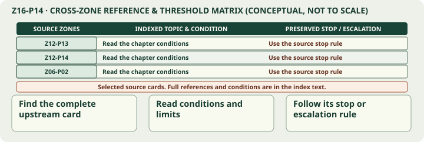

Z16-P14 · Field reference atlas · New manuscript
Ice Safety, Deterioration and Zero-Guarantee Cross-Reference
Harmonize Minnesota DNR ice-thickness guidance, spring candled-ice hazards, and B013 zero-guarantee angling boundaries across Z06, Z11, and Z12.
When it applies · Early freeze-up, mid-winter snow-insulated ice, and spring thaw on lakes and rivers.
Equipment · Full offline reader (Z06, Z11, Z12), primary zone cards, and local emergency and agency references.

Actions
- Enforce the universal Z12, B013 rule: NO ice is ever 100% safe, prior foot or vehicle tracks never certify ice strength, and Minnesota DNR thickness guidelines apply only to new, clear, solid ice (Z12-P13, Z06-P01).[A02, X03, H18]
- Keep angling strictly secondary to survival priorities—never improvise ice holes without proper tools, flotation, rescue picks, and verified thickness measurements (Z06-P01, Z06-P02).[A02, H18, X03]
- Avoid river inlets, outlets, springs, pressure ridges, beaver runs, and spring candled vertical-column ice unconditionally, using Reach-Throw-Dont-Go shore assistance for any immersion emergency (Z12-P16, Z07-P25).[A02, X03, L13]
Failure recognition · Trusting a single shoreline measurement or stepping onto snow-covered spring ice triggers sudden cold-water shock and drowning.[X03, H18]
Verify · Zero-guarantee ice rules, current, inlet exclusions, flotation wear, and shore-only rescue boundaries remain aligned.[X03, H18]
Stop or change course · Stop at the shoreline whenever ice thickness, clarity, current influence, or rescue gear is uncertain.[X03, H18]
Evidence and editorial notes
- A02 · National Weather Service · Winter Weather Safety: Stranded Motorists (Current web edition)
- Section: Seasonal Upper Midwest hazard calendar synthesis · Conditions: Integrating Z02, Z03, Z04, Z11, Z12, Z13, and Z15 seasonal shifts
Support: Seasonal hazard indexes align winter cold/ice, spring flood/thaw, summer heat/storms, and autumn hunting/fire windows without overriding local forecasts.
Limitations: Calendar windows are planning aids only; real-time NWS watches/warnings and site checks govern field action. · Conflicting evidence: None noted.
Editorial note: Anchors Z16 seasonal index cards. · Specialist reviewer: Meteorologist and emergency manager
Primary source · checked 2026-11-25 - H18 · Minnesota DNR · Waterfowl Hunting and Federal Migratory Bird Rules (Current web edition)
- Section: Waterfowl cold-water capsizing and non-toxic shot compliance · Conditions: Wetland and open-water fall waterfowl environments
Support: Cold-water immersion, overloaded boats, and wading drop-offs cause severe fatalities; wear flotation, check forecasts, and verify federal non-toxic shot and species limits.
Limitations: Emergencies and weather shifts override harvest goals; stay ashore in high wind or unverified ice. · Conflicting evidence: None noted.
Editorial note: Reconciles B013 P15-P16 with Z06 water/ice limits. · Specialist reviewer: Water-safety and wildlife reviewer
Primary source · checked 2026-11-25 - L13 · Minnesota DNR · Scientific and Natural Areas Visitor Rules and Prohibitions (Current web edition)
- Section: Zero-disturbance scientific preserve ethics · Conditions: Sensitive habitats, wetlands, and rare-species corridors
Support: Natural-area conservation prohibits altering vegetation, digging pits, or leaving wire/cordage debris that entangles wildlife indefinitely.
Limitations: Abandoned wire or monofilament creates persistent ghost-entanglement hazards. · Conflicting evidence: None noted.
Editorial note: Addresses ghost-gear and environmental restriction. · Specialist reviewer: Conservation ecologist
Primary source · checked 2026-11-25 - X03 · NWS · Cold Water Hazards and Safety (current web edition)
- Section: Cold Water Hazards > 1-10-1 Principle and Survival Actions · Conditions: Unexpected immersion in cold lakes, rivers, coastal or marine waters
Support: Protect the airway, use flotation, get out safely if possible, and prioritize rescue. The 1-10-1 mnemonic is descriptive and does not establish deadlines or survival times.
Limitations: Exact individual survival minutes vary widely with body size, clothing, sea state and water temperature. · Conflicting evidence: None; aligns with MN-COLDW and USCG guidance.
Editorial note: Anchors cold-water immersion decision thresholds in Z12. · Specialist reviewer: Cold-water rescue and emergency medicine
Primary source · checked 2026-11-24
Source lineage · New manuscript (Z16 P20 seasonal index) · Classification · New manuscript.